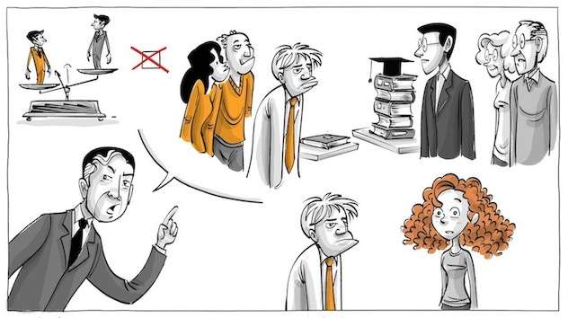

As leis fundamentais da estupidez humana
por Giovani Perotto Mesquita - 25/10/2024
rev. 30/10/2024
Índice
Introdução↩︎
Analisaremos a tese proposta por Carlo M. Cipolla em seu livro As Leis Fundamentais da Estupidez Humana, onde ele delineia perfis comportamentais das relações humanas com base nos ganhos e perdas resultantes das ações dos indivíduos.
É importante destacar que este é um tema controverso, que gera discussões acaloradas entre acadêmicos.
Nosso objetivo não é defender ou acusar, mas apresentar a teoria de forma resumida e estimular a reflexão do leitor.

Sobre o Autor do livro↩︎
Carlo M. Cipolla (Pavia, 15 de agosto de 1922 — Pavia, 5 de setembro de 2000) foi um historiador económico e medievalista italiano. Obteve sua licenciatura na Universidade de Pavia em 1944. Seu nome de batismo é Carlo Cipolla. Nas publicações, porém, é habitualmente referido como Carlo M. Cipolla. Esse nome do meio inexistente é normalmente mal interpretado como Maria.
Através da história econômica, com um enfoque humanista da mesma, procurou mostrar um maior interesse nas causas que tem provocado determinadas situações econômicas e sociais ao longo da história, tendo em vista os efeitos materiais e cifras concretas. Foi também conhecido por seus artigos sobre a "superpopulação" e seus ensaios sobre a estupidez humana.[2]
As Leis↩︎
Conforme Carlo M. Cipolla cita em seu livro, eis as 5 leis:
- Todo mundo subestima, sempre e inevitavelmente, o número de indivíduos estúpidos em circulação.
- A probabilidade de determinada pessoa ser estúpida independe de qualquer outra característica dessa pessoa.
- Uma pessoa estúpida é uma pessoa que provoca perdas para outra pessoa ou um grupo de pessoas enquanto não obtém nenhum ganho para si mesma, e possivelmente incorre em perdas.
- Pessoas não estúpidas sempre subestimam o poder de causar danos dos indivíduos estúpidos. Em particular, pessoas não estúpidas se esquecem constantemente de que em todo momento e lugar, e sob qualquer circunstância, lidar e/ou se associar com pessoas estúpidas resulta infalivelmente em um erro altamente custoso.
- Uma pessoa estúpida é o tipo mais perigoso de pessoa.

As 4 categorias de pessoas↩︎
De acordo com o autor, podemos categorizar as pessoas avaliando seu comportamento. Para isso, dividimos em quatro quadrantes, considerando duas dimensões: uma que retrata a relação de ganho/perda do indivíduo e outra que representa o ganho/perda dos demais.
- As Prestativas: Aquele tipo de pessoa que para evitar dano a outra(s) pessoa(s), se coloca em situação de dano. Provocando a sua perda, para o ganho do(s) outro(s) -/+.
- As Inteligentes: Aquele tipo de pessoa que evita a situação de dano a si, e a outra(s) pessoa(s). Busca o ganho a todos +/+.
- As Bandidas: Aquele tipo de pessoa que evita a situação dano a si, colocando outra(s) pessoa(s) em situação de dano. Importa somente com o seu ganho +/-.
- As Estúpidas: Aquele tipo que coloca a si e a outra(s) pessoa(s) em situação de dano. Provoca perda a todos -/-.

Conclusão↩︎
Contrariando as principais tendências culturais entre os seus colegas intelectuais, Cipolla estava convencido de que os homens não são iguais. Que alguns são estúpidos e outros não, e que a diferença é determinada pela natureza e nada mais. Uma pessoa é estúpida da mesma forma que alguém é ruivo, escreveu ele.
Cipolla alertou que o potencial prejudicial da pessoa estúpida depende, portanto, da quantidade de estupidez herdada, bem como da sua posição de poder na sociedade.
Entre burocratas, generais e políticos não é difícil encontrar exemplos claros de indivíduos basicamente estúpidos, cuja capacidade prejudicial foi alarmantemente reforçada pela posição do poder que ocupavam.[3:1]
Cipolla não considerou necessariamente a estupidez como uma questão de quociente intelectual, mas sim uma falta de inteligência relacional. Ele parte da ideia de que, ao nos relacionarmos uns com os outros, podemos obter benefícios e proporcionar benefícios aos outros ou, pelo contrário, podemos causar danos ou prejudicar os outros.[4]
A estupidez deve ser avaliada como uma realidade, que não esta relacionada diretamente a inteligência. Diversas correntes tentam identificar o seu(s) gatilho(s), agravada em como na atualidade o isolacionismo de idéias e a arrogânica de pensamento criam barreiras.
A estupidez é mais facilmente identificado no momento posterior a sua consequência, o desafio é tentar identificar e mitiga-la.
A dúvida pode ser uma forma de antídoto, o qual nos força a refletir antes de tomar decisões ou agirmos. Citando a máxima de Sócrates: "Só sei que nada sei", estabelece que devemos reconhecer a própria ignorância e a importância de admitir que não sabemos tudo. Pode ser o primeiro passo para mitigar a estupidez.
[3:2]
Vídeos↩︎

Argumento de contraposição, com uma visão mais efeito-causa:

A visão de Robert Musil sobre a estupidez, resultado da ação ou falta de ação:

Exemplos↩︎
Pessoas estúpidas também fazem a História
- Gengis Khan e a destruição do Império Corásmio 01:52[8]
Como um governante regional instigou um dos maiores conquistadores da história, resultando na queda do Império Corásmio, na invasão do leste europeu e na disseminação de novas doenças pela Europa. - O acidente do Exxon Valdez 07:08[8:1]
Quando o capitão do navio decide relaxar e deixa a embarcação sob o comando de seu terceiro imediato inexperiente, resulta em uma das maiores catástrofes ambientais da história, com impactos irreparáveis ao meio ambiente. - A Operação Barbarossa 11:27[8:2]
Quando Hitler rompeu o acordo com a URSS, ele abriu duas frentes de batalha. Como consequência, seu regime caiu, e os impactos dessa decisão ainda reverberam nas relações internacionais até os dias de hoje. - A Primeira Guerra Mundial 17:36[8:3]
Uma sucessão de decisões estúpidas resultou em um dos maiores conflitos modernos, cujas consequências perduram até hoje. - O acidente nuclear de Chernobyl 20:37[8:4]
O engenheiro-chefe da usina, ignorando alertas e protocolos, decidiu prosseguir com um teste para se promover. Como consequência, quase causou uma contaminação global e contribuiu para o aumento do aquecimento global.

- Campanha das 4 pagras
Mao Tsé-Tung realiza ação para eliminar os pardais, considerados culpados por comer as sementes das plantações. Como consequência o número de lagartas e gafanhotos explode e quase 30 milhões de chineses morrem de fome.

- Dust Bowl
Como uma seca agravada, pelo manejo inadequado do solo, ignorância ao meio-ambiente e políticas equivocadas, deixaram muitas pessoas com fome e falidas.

A vida imita a arte↩︎
O filme que originalmente era uma comédia e que se tornou um documentário. Assim é definido o filme “Idiocracia” (“Idiocracy”, 2006) do diretor e escritor Mike Judge (“Beavis e Butthead” e “O Rei do Pedaço”)
Um casal acorda de uma longa hibernação criogênica de 500 anos para encontrar um mundo no qual a burrice, estupidez e preguiça (e suas consequências como o machismo e a intolerância) se tornam virtudes. O presidente dos EUA é um ex ator pornô e lutador de Telecatch e a água potável foi substituída por um isotônico produzido por uma gigantesca corporação, gerando uma catástrofe ambiental. E a política se confunde com entretenimento e vídeo-game.
Um filme tão profético que o próprio estúdio 20th Century Fox resolveu boicotar o lançamento da sua própria produção, escondendo “Idiocracia” das grandes redes de exibição.
“Idiocracia” é visionário: como uma sociedade inteira não percebeu que emburrecia enquanto as expectativas sobre o que é ser inteligente cada vez mais diminuíam com o avanço tecnológico e da indústria do entretenimento.[11]


Referências↩︎
Cipolla, Carlo M., As leis fundamentais da estupidez humana, 1ª edição, Planeta, 2020. ↩︎
Wikipedia, "Carlo M. Cipolla", Wikipedia, 25/10/2024, https://pt.wikipedia.org/wiki/Carlo_M._Cipolla. ↩︎
Koblin, Jonas, "Cipolla’s 5 Laws of Human Stupidity", Sprouts Schools, 25/10/2024, https://sproutsschools.com/cipollas-5-laws-of-human-stupidity/. ↩︎ ↩︎ ↩︎
Streck, Lenio Luiz, "A conspiração dos néscios e as cinco leis fundamentais da estupidez", Conjur, 25/10/2024, https://www.conjur.com.br/2020-set-24/senso-incomum-conspiracao-nescios-cinco-leis-fundamentais-estupidez// ↩︎
Sprouts, "As cinco leis da estupidez humana de Cipolla", YouTube, 25/10/2024, https://www.youtube.com/watch?v=oYpiYoqXCbA. ↩︎
Barros, Daniel Martins de, "Estupidez: Por que acreditamos em coisas idiotas?", YouTube, 30/10/2024, https://www.youtube.com/watch?v=2BCQVwCwl6U. ↩︎
Conjunção Bookiana, "Somos todos estúpidos? Sobre a Estupidez - Robert Musil", YouTube, 30/10/2024, https://www.youtube.com/watch?v=uzhlgJ_AWKc. ↩︎
Rezzutti, Paulo, "Cinco estúpidos que mudaram a história", YouTube, 25/10/2024, https://www.youtube.com/watch?v=aczOqwc66gc. ↩︎ ↩︎ ↩︎ ↩︎ ↩︎ ↩︎
Caça Viagens, "China matou 1 bilhão de pardais o que provocou a morte de 30 milhões de pessoas", YouTube, 30/10/2024, https://www.youtube.com/watch?v=Zt8_-as-TIQ. ↩︎
Porteira Frouxa, "DUST BOWL, QUANDO A POEIRA TOMOU CONTA DOS ESTADOS UNIDOS", YouTube, 30/10/2024, https://www.youtube.com/watch?v=svFNrcE73Vw. ↩︎
Ferreira, Wilson Roberto Vieira, "A burrice e estupidez do futuro já estão entre nós em Idiocracia", Cinegnose, 25/10/2024, http://cinegnose.blogspot.com/2019/09/a-burrice-e-estupidez-do-futuro-ja.html. ↩︎
David 432 RDRDRD, "IDIOCRACIA dublado", YouTube, 25/10/2024, https://www.youtube.com/watch?v=xUQbNgbK0S4. ↩︎
Abraham, "Idiocracia Não é uma Comédia: Foi um AVISO!", YouTube, 25/10/2024, https://www.youtube.com/watch?v=sD52RZAVahY. ↩︎
Scapella, Rafael, "IDIOCRACIA - O Filme Que Tentou Nos Alertar", YouTube, 25/10/2024, https://www.youtube.com/watch?v=yR9pAGnlLF8. ↩︎